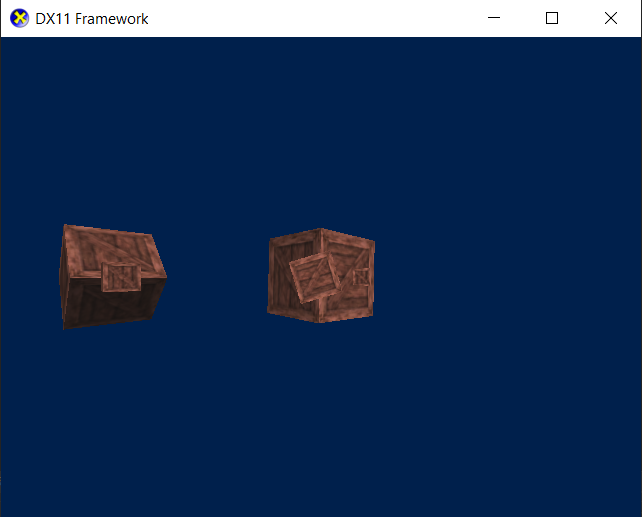

Previous Projects
Throughout my previous studies at Boston College, I undertook a number of final projects towards the end of the 2 year course
in making games and 3D modelling. My first year at university also provided me with a number of projects through the coursework accross the year
Duck Wars
Duck Wars was my final project for the developing computer games and computer games design module.
It was an overhead survival shooter with upgradable weapons, pickups and a random length game wich was a challenge
to play in the later stages. All models and code and some textures were created for the game by me and the game was created in Unity.
3D Modelling
For my final 3D modelling project in college I aimed to recrate the scene of a sort of safe location in an apocolyptic game world where one might survive a night inside an abandoned M113 millitary APC, making use of PBR textures, all of my own models and lighting.


C++/SDL Mario
In my first year, semester 1 module Game Engine Creation I created a Mario Bros game in C++ utilising the SDL Library, the game had a selection of different levels, animated characters and the ability to make the game multiplayer at any time at the press of a key.
The levels would be progressed through by collecting every coin on the level and killing every enemy. This project build a strong foundation of my C++ skills and helped the progression onto my next uni project.
C++ OpenGL Space Scene
In my first year, semester 2 module Fundamentals of Game and Graphical System Development, our project was to make a scene in OpenGL. I created a deep space scene with a controllable spaceship to navigate and explore.
The scene contained a freighter ship that would jump into the scene upon loading in. Eeach asteroid had its position randomly generated and the scene utilised loading OBJ files and textures. This project was my introduction to 3D Graphical programming in
C++.


C++ DirectX Framework
Currently I am working on building a framework in DirectX 11 to support a multitude of features and capabilities. The aim is to have a system where you can manipulate all of the scene lighting, positioning of objects while supporting multiple camera angles and much more.
The framework currently supports diffuse, specular and ambient lighting at a per-pixel level and the ability to load textures, with multiple objects rotating in the scene. The framework will, in its final state, will include improved extra lighting and processing effects
while providing a de-coupled framework that can be expanded upon into future projects.